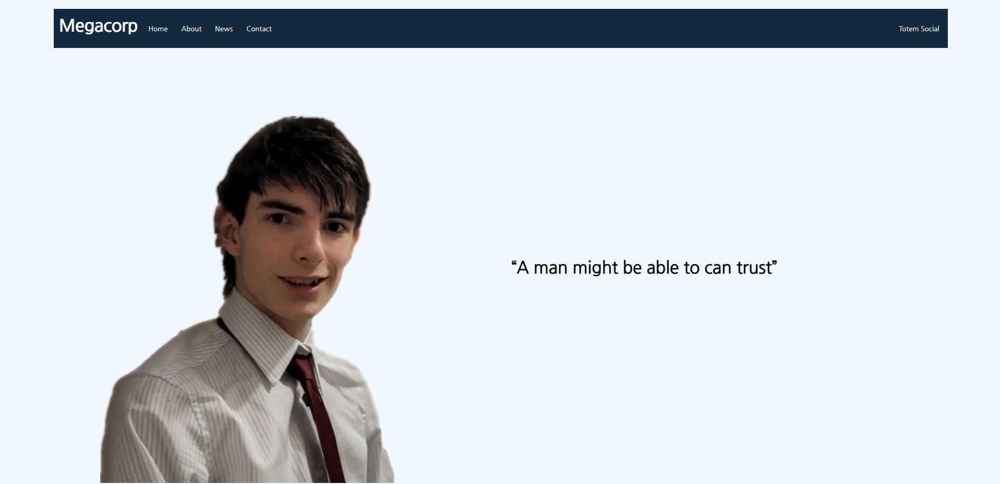

Portfolio
| TotemSocial |
TotemSocial is a social media site me and a friend made. It took us about 1 week to make the original prototype but two months to fix all of the bugs,
I worked on the front end of the site desiging the user interfaces making sure that the design was sleek but understandable.
| YC-Movies |
YC-Movies is a movie streaming site I made with a friend, I wanted to see how easy it would be to design one, It was a very fun project to work on and it
was my first group project and I think it turned out pretty good.
| Lufton co |
Lufton co was a college project that we had to do in which we had to design a website for a fictional charity called Lufton Co, The site was to advertise the
community hall and facilitate booking appointements to rent out the hall as well as a few reviews.
| Website 95 |
My old website was designed after the windows 95 operating system I wanted to challenge myself to create a recognisable design that is interactive and fun, the website
is all on one page meaning you only have to wait one load time. The site is dynamic aswell and you can open and close as many windows as you like!

| Megacorp |
Megacorp is a fictional company I made to advertise some of my old projects. I wanted to design a somewhat plain / corporate looking website but also add some personality
to it so I decided on adding the quote "A man might be able to can trust", I love the quote because its very obviously incorrect grammar and doesn't make sense,
which contrasts the corporate feel of the site.